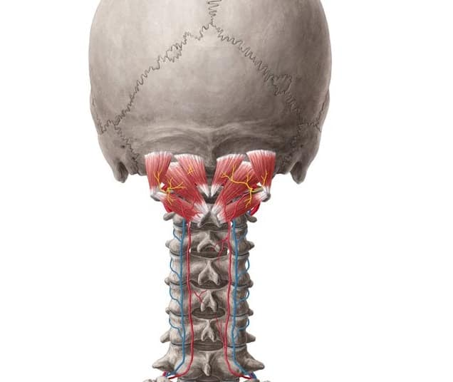

#枕下肌群，對於頭部與頸部的穩定及活動佔有非常重要的角色。
#枕下肌群，對於頭部與頸部的穩定及活動佔有非常重要的角色。
今天一位多年 #眩暈 的女士，不論是頭頸部小動作的活動或是合併軀幹大動作的轉換，都容易發生眩暈。 經過診察後，發現是枕下肌群的抑制合併枕骨乳突與頸椎第一節的錯位，透過肌筋膜脈學乾針與徒手治療後，當下再測試大小動作的眩暈改善很多！
枕下肌群是個日常使用頻繁，但也容易被忽略的區域，尤其3C長時間的使用，容易進一步衍生出不良體態、上交叉症候群，適時的放鬆枕下區域，對於肩頸酸痛都能有不錯的舒緩效果，至於慢性、長年難解的問題，切莫自行亂壓亂按，還是得尋求專業人員協助唷！
祝大家都有健康的枕下肌群🤗🤗🤗
